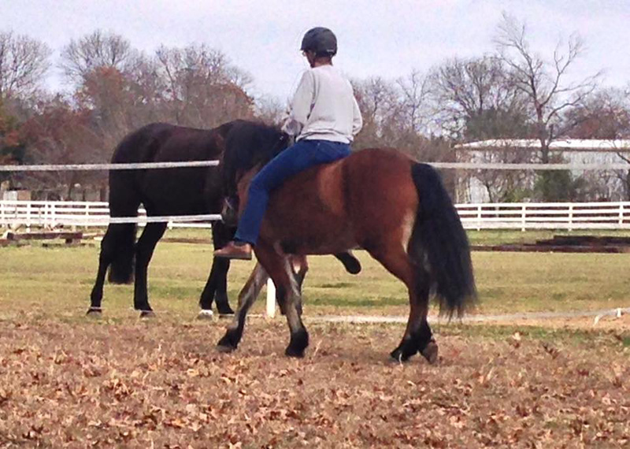
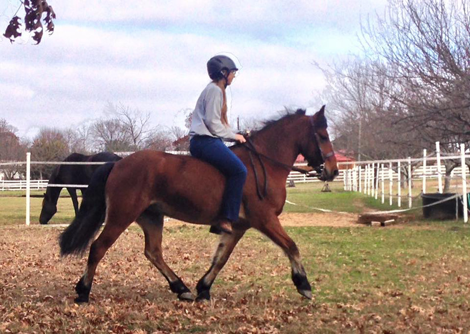
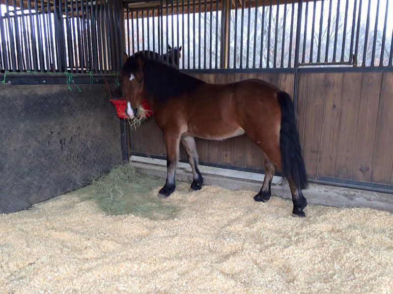

Playing
at home I like that I can hop on him bareback and do a little work or play on those days when tacking up seems like too much trouble.
 Working
on leg yielding along the fence line. He knows cross over from his driving work, but turn on the forehand is a bit different for him.
 A comfy, bouncy trot around the yard.
 I've
kept him in a little when the weather was bad, so now there are shavings in the stall. But, I have to keep it closed because the boys thinks it's a great place to go to the bathroom now.